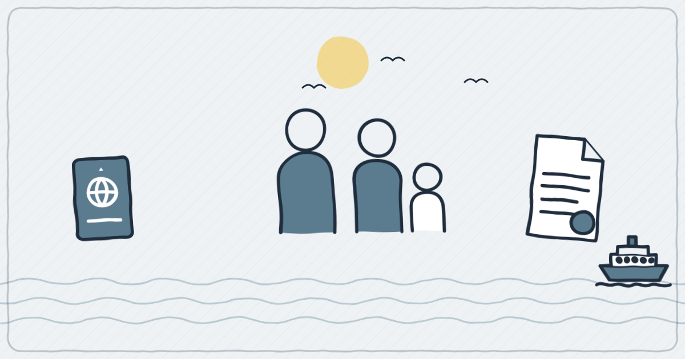

Grandparents Taking Grandkids on a Cruise Without Parents

Yes, grandparents can take grandchildren on a cruise without the parents. Bring each child's passport, a consent letter signed by the parents who stay home (Royal Caribbean and Holland America want it notarised), a signed medical authorisation and insurance that names the child. One adult of 21 or over must be booked with the children, 25 or over on Carnival.
Yes, and the cruise lines see it every week. Grandparents can take grandchildren on a cruise without either parent, as long as one of you is 21 or over (25 on Carnival), is booked with the children, and arrives at the pier with the right folder: each child's passport, a consent letter signed by the parents staying home, a medical authorisation, and insurance that names the children. On Royal Caribbean and Holland America the notarised letter is a condition of boarding, not a suggestion.
Which cruise lines let grandparents sail with grandchildren alone?
All of the mainstream lines do. What differs is the minimum age of the responsible adult, how far away the children's cabin can be, and how formal the consent letter has to be. Rules vary by region (European and Australian sailings often use 18 rather than 21), so confirm with your line once booked.
Carnival
The adult must be 25 or over on embarkation day and can be any relative or guardian, not necessarily a legal one. Children 12 and under in a separate cabin must be across the hall or next door; 13 to 17-year-olds can be up to three cabins away. Carnival strongly recommends an original signed letter from the absent parents or legal guardians.
Royal Caribbean and Celebrity
The adult must be 21 or over, in the same cabin or a connecting one. Both lines require an original notarised letter from the child's parents authorising the adult to take the child on that specific cruise, supervise them and approve emergency medical treatment. Grandparents are not exempt, and the line publishes a sample letter.
Holland America
A chaperone of 21 or over, who can be a relative or any responsible adult. Minors under 18 heading to certain countries must travel with both parents or carry a notarised consent letter from the parents at home; a child with only one legal parent needs a notarised statement saying so.
Norwegian, Princess and MSC
An adult of 21 or over in the same or a connecting cabin on most sailings. Each has its own minor consent form; download it from your booking and bring the signed original.
What consent letter do the parents need to sign?
The Government of Canada publishes a free consent letter you can fill in online and print. It should be signed by every parent or person with decision-making responsibility who is not travelling; any child under 19 should carry one when leaving Canada without both parents; and although any adult can witness the signature, a notary public is strongly recommended. Bring the original, because a photocopy or a photo on a phone may be questioned.
Whatever template you use, the letter should carry:
- the child's full name and date of birth, matching the passport
- the parents' names, addresses and phone numbers, and a statement that they consent to the trip
- your full names, your relationship to the child and your contact details
- the ship, the sailing dates and the ports, so it is clearly about this trip
- permission for you to approve emergency medical treatment, which Royal Caribbean specifically asks for
Separated or divorced parents both sign, unless a custody order gives one sole decision-making authority, in which case bring the order. If a parent has died, carry the death certificate.
What other documents go in the folder?
- A passport for each child. It is the only document that gets a child home by air from Alaska, Mexico or the Caribbean if something goes wrong, and the only one every line accepts; passports for an Alaska cruise from Vancouver explains why the closed-loop exception does not help Canadian families.
- A copy of each child's birth certificate showing the parents' names, which ties your surname to theirs if a border officer asks.
- A medical authorisation signed by the parents: permission to consent to treatment, the child's provincial health card number or US insurance details, allergies, medications with doses, and the family doctor's number.
- The cruise line's own form, if it has one, printed and signed, in addition to the Canadian letter.
- A scan of all of the above on your phone and emailed to yourself, with the originals in your carry-on, never in checked bags.
Can the grandkids have their own cabin?
Only within the line's rules. On most lines a cabin booked for under-21s needs a 21-year-old in it, so the usual pattern is two connecting cabins with one grandparent on each side, or a grandparent sharing with the children. Carnival lets teenagers be up to three cabins away as long as the adult is 25 or over. Connecting cabins are scarce and sell out early on school-holiday sailings, so book them the day you decide to go; two cabins or one suite walks through the cost of each option.
Does the kids club let grandparents sign children in and out?
Yes. On the first afternoon, register the children at the youth centre and name both grandparents as the adults allowed to drop off and collect, so a nap or a spa appointment never leaves a child stuck. Most programmes run in age bands from about 3 to 17 and are free during the day, with paid late-night sessions and paid nurseries for under-threes on some ships. Tell the staff about allergies and medications.
Teen lounges are drop-in with no sign-out, which means a 15-year-old can leave whenever they like, so agree curfews and meeting points before you need them.
What about insurance when the parents are not there?
Nobody is covered by default. A Canadian child's provincial plan pays little or nothing for a ship's doctor or a foreign hospital, so the children need their own travel medical policy or a named place on yours, with medical evacuation and cancellation for the whole party. Keep the insurer's emergency number in the folder; cruise travel insurance for Canadians covers what the policy must include.
How do you pace a week with a six-year-old and a sixty-six-year-old?
Plan fewer things than you would for yourselves.
- One outing in the morning, lunch on board, then the kids club while you rest.
- Book the early dinner seating, or eat in the buffet on the nights the children fade.
- Keep home bedtimes within an hour of normal.
- Leave one port day with no excursion at all, or just the pool.
- Pack the remedy the parents use for carsickness, because the first night at sea is when children feel seasick.
What should you agree with the parents before you sail?
- Spending. Charging rights on the children's cruise cards, and the daily cap; most lines can set a child's card to no-charge.
- Screens and wifi. How much, and whether a small wifi package for a nightly photo home is worth it.
- Water and excursions. Pool rules without an adult at the rail, and which excursions the parents are happy with: a zipline is a different conversation from a city walk.
- Illness. Who decides on a visit to the ship's doctor; the medical authorisation makes you that person.
- Alcohol for older teens. The drinking age is 21 on sailings from North American ports and 18 on many European ones; agree the rule before a 19-year-old discovers the difference.
Want this checked for your own sailing? A licensed cruise consultant can price it up and answer questions for free, with no obligation.
Ask a cruise expert →The folder, the form and the nap
A grandparents-and-grandkids cruise comes down to three things: a folder with passports, a notarised consent letter and a medical authorisation; the line's own form and kids club registration done on day one; and an afternoon nap written into every day. Get those right and the ship does the rest.
Questions people also ask
Do grandparents need a notarised letter to take grandchildren on a cruise?
On Royal Caribbean, Celebrity and Holland America, yes: an original notarised letter from the parents authorising the trip and emergency medical care. Carnival says it strongly recommends an original signed letter. The Government of Canada and US Customs both recommend a notarised letter whenever a child travels without both parents, so get it notarised whichever line you sail.
How old does a grandparent have to be to cruise with grandchildren?
Old enough is easy; the rule that matters is the minimum age of the adult responsible for the under-21s. Carnival sets it at 25, Royal Caribbean, Holland America, Norwegian and Princess at 21. Any grandparent clears that bar. The adult must be booked in the children's cabin or, on most lines, a connecting or nearby one.
Can grandchildren use the kids club if their parents are not on board?
Yes. You register them on the first afternoon as the responsible adults, and the youth staff will only release a child to the people named on that form. Add both grandparents so either of you can collect them, and bring the cabin number and the child's allergies and medications to registration.